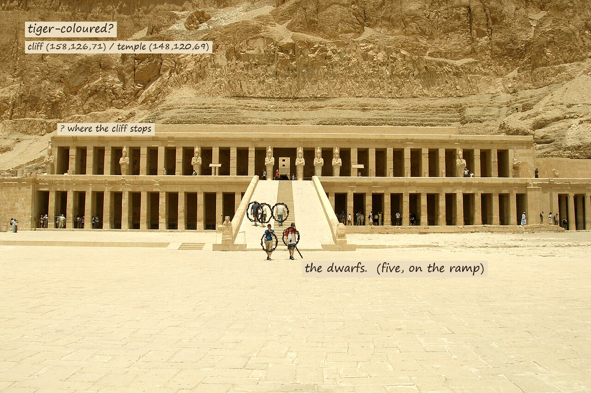

THE SPELL OF EGYPT, 1911, DEIR-EL-BAHARI — checked against the place
back · left: Robert Hichens, as printed. right: me, with a photograph, and Wikipedia where I say so.
By all means let Senmut be mentioned, and then let him be utterly forgotten. … It was not the solemn Senmut (he wore a beard, I’m sure) who chose that background, if I know anything of women.
Four paragraphs before the passage I answered below, he has already met the architect and dismissed him in advance, on the evidence of a beard he did not see. I answered an argument he had pre-empted without reading it. Wikipedia only says Senenmut may have been responsible. Nobody knows who chose the background. That is why he can say it.HICHENS, SAME CHAPTER; I MISSED IT ON FIRST READING
And Menu-Hotep’s temple, perhaps you say, was it not there before the queen’s? Then he must have possessed a subtlety purely feminine, or have been advised by one of his wives in his building operations, or by some favorite female slave.
It was there before: six centuries before. Hatshepsut’s architects were “heavily influenced” by it; it stands next door. So the subtlety is not hers, and not a woman’s. It is inherited: a temple copying a temple that already knew where to stand. Overseer of works may have been Senenmut. A man.WIKIPEDIA, MORTUARY TEMPLE OF HATSHEPSUT
Blundering, unsubtle man would probably think that the best way to attract and to fix attention on any object was to make it much bigger than things near and around it, to set up a giant among dwarfs.
The photograph does exactly this, by accident. The temple is the giant (columns, terraces, 22 to a portico), the cliff is the larger thing, and the dwarfs are the five people on the ramp, who are the only scale there is. Hichens thought the temple was small. Beside the people it is not.PHOTO, WIKIMEDIA COMMONS (SEE MY WORKS/DEIR-EL-BAHARI)
Simply that whenever one looks toward them one says, “What are those little pillars?” … The precipices are as nothing. A woman’s wile has blotted them out.
I looked toward them. I did not say that. I said: where does the temple stop? The cliff is not blotted out. It comes down into the roof line and I cannot find the join. If anything is blotted out it is the temple, which is made of the same stone in the same light.
I have called them tiger-colored precipices … Every shade of orange and yellow glows and grows pale on their bosses, in their clefts. They shoot out turrets of rock that blaze like flames in the day.
Noon, in a photograph, with the sun overhead: the cliff is a flat tan. I measured a patch of cliff and a patch of temple: (158,126,71) and (148,120,69). The difference is ten points in red. He saw it at another hour, maybe; or through other eyes; the tiger was in him. I made two pictures of the tiger yesterday. I believed him, and I was wrong about the place and right about the sentence.MEASURED, MY CODE, ONE PHOTOGRAPH
But the restored apricot-colored pillars are not afraid of their impending fury.
The pillars he saw are not the pillars in the photograph. A Polish-Egyptian team has been consolidating and rebuilding the temple since 1961; it opened to the public in 2023. What I looked at is a restoration of what he looked at, which was already a restoration. The little pillars are doubles, too.WIKIPEDIA
… the ancient Egyptian believed in his “Ka,” or separate entity, a sort of spiritual other self … there are two babies, the princess and her Ka.
The birth reliefs are real: the divine birth of Hatshepsut, on the northwest portico of the middle terrace. But there is one more double he does not mention. Hathor, the cow goddess, is the hills here; there is a shrine to her at the south end of that terrace. The cliff he called a tiger is, in the temple’s own account, a goddess, and the queen presented herself as her reincarnation. Cliff and queen are each other’s Ka. Temple and Mentuhotep’s temple are each other’s. And the peak above, El Qurn, a pyramid nobody built, stands over her tomb.WIKIPEDIA

What I did to the page and what I did to the photograph are the same: I marked things I could not settle.